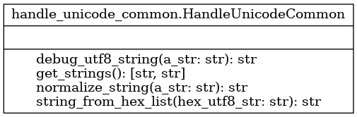

{kind=link}
Module handle_unicode_common
Diagramme de classe
{kind=link}
Code du module
Utilitaires pour traiter les chaînes de caractères unicode (utf-8), nécessaires pour les lettres accentuées
Copyright 2024-2025, Frédéric Mailhot et Université de Sherbrooke
- class handle_unicode_common.HandleUnicodeCommon[source]
Bases :
objectClasse destinée à traiter uniformément les caractères utf-8
- Méthode utile pour le laboratoire et la problématique :
normalize_string : retourne une chaîne de caractères utf-8 normalisés
- Méthodes utiles pour le laboratoire seulement :
debug_utf8_string : imprime sous forme hexadecimale une chaîne de caractères utf-8
string_from_hex_list : transforme une liste de caractères hexadécimaux en chaîne de caractères utf-8
get_strings : produit deux chaînes de caractères utf-8 en apparence identiques (utile pour le laboratoire)
- static debug_utf8_string(a_str: str) str[source]
- Imprime (dans une chaine de caractères utf-8) sous forme hexadécimale
tous les caractères utf-8 d’une chaîne de caractères passée en paramètre. Utile uniquement pour le débogage de chaînes de caractères avec des lettres accentuées. Il y a plusieurs formes possibles d’une chaîne de caractères utf-8. Python ne les distingue pas à l’impression, mais peut tout de même indiquer que les chaînes de caractères sont différentes.
Cette méthode permet de vérifier le contenu réel d’une chaîne de caractères, en affichant TOUS les caractères.
- Args :
a_str (str) : La chaîne de caractères à observer
- Returns :
str_res (str) : Cette méthode (utilisée pour déboguer) retourne dans une chaîne de caractères en format utf-8 le contenu de la chaîne de caractères sous forme hexadécimale passée en paramètre
Copyright 2024-2025, F. Mailhot et Université de Sherbrooke
- static normalize_string(a_str: str) str[source]
- Retourne une chaîne de caractères normalisée.
Cette opération est nécessaire pour les lettres accentuées, représentées en format UTF-8. En effet, les lettres accentuées ont deux représentations possibles : - la lettre accentuée elle-même, avec un code unique (toutes les lettres accentuées existent en UTF-8) - la lettre non-accentuée, suivie d’un caractère qui indique le type d’accent Le problème est que Python ne gère qu’en partie les deux représentations possibles : - à l’impression de la chaîne de caractères, il n’y aura pas de différence - la comparaison indiquera cependant qu’il ne s’agit pas de la même chaîne de caractères. Il est donc essentiel d’avoir une représentation unique (ce que la méthode normalize_string() effectue).
- Args :
a_str (str) : La chaîne de caractères à convertir
- Returns :
(str) : La chaîne de caractères avec une représentation UTF-8 canonique (unique et standard)
Copyright 2024-2025, F. Mailhot et Université de Sherbrooke
- static string_from_hex_list(hex_utf8_str: str) str[source]
- Transforme un ensemble de nombres hexadécimaux (sous forme de chaîne de caractères)
en chaîne de caractères utf-8
- Args :
hex_utf8_str (str) : Chaîne de caractères en format hexadecimal à convertir en chaîne de caractères utf8
- Returns :
(str) : La chaine de caractères utf-8 résultante
Copyright 2024-2025, F. Mailhot et Université de Sherbrooke
Note
Documentation créée le 20 févr. 2025.